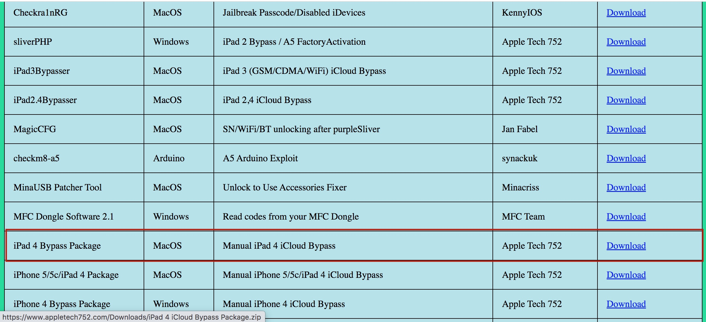
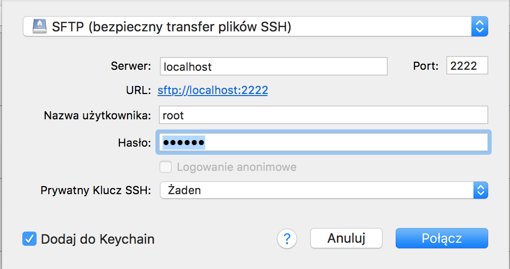

strona uwmpr
sociale
strefa tech
strona główna
jak uzyskać dotęp root do plików z poziomu dfu na ipadzie 4
ZALECAM ROBIENIE TEGO NA MACU NA LINUXIE PRAWDOBODOBNIE TEZ ZADZIAŁA WINDOWSA NIE TESTOWAŁEM
na samym początku będziesz musiał pobrać dwie rzeczy
cyberduck
paczka z i bec ,ibss, ramdiskiem itd.
W PRZYPADKU DRUGIEGO LINKU POBIERAMY TYLKO PACZKE KTÓRA JEST ZAZNACZONA NA ZDIĘCIU!!!
pierwszy link to cyberduck ten program umoliwi tobie połączenie się przez sftp i ssh z twoim ipadem

zainstaluj cyerducka i zorpakuj paczke
wpisz cd i przeciągnij folder exploits do okna termainala
następnie wpisz "python ipwndfu -p"
i poczekaj na informacje "device is now in pwned DFU mode"
następnie przejdź do folderu exploits w terminalu wpisz ipwndfu -l [plik ibss z folderu exploits]
następnie wpisz irecovery -f [plik IBEC z folderu exploits]
potem wpisz ./irecovery2 -s (powinna pokazać się mozliwość wysłania komendy do ipada)
wpisz tam /send [przeciągnij plik devicetree do okna termianala]
wpisz komende devicetree
wpisz devicetree
wpisz /send [przeciągnij ramdisk do terminala]
wpisz ramsdisk
wpisz /send [przeciągnij plik kernelcache]
wpisz bootx (na ekranie ipada powinno pokazać się logo i pasek postępu)
wejdź do głównego katalogu folderu i przejdź do folderu python
wpisz ścieka/python/tcprealy.py -t 22:2222
otwórz cyberduck kliknij nowe połączenie i uzupełnij dane jak na zdięciu

hasło do sftp: alpine
na górze kliknij idź-> wyślij komende
wyślij komende mount_hfs /dev/disk0s1s1 /mnt1
przejdź do foldru /mnt1
i juz mozesz edytować pliki na dwoim ipadzie!!!
teraz aby wyjść z trybu ponownie wyślij komende i wpisz reboot_bak
i to tyle masz probblemy z czymś? napisz do mnie
podziękowania dla appletech752 za stworzenie skryptów